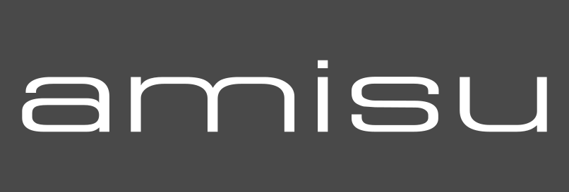

대표 로고대표 브랜드 마크
대표 로고대표 브랜드 마크뉴요커 New Yorker
뉴요커(New Yorker)는 1971년 독일에서 시작된 청소년 중심의 패스트패션 의류 소매 브랜드이다.
최종 업데이트
뉴요커는 어떤 브랜드인가
뉴요커(New Yorker)는 독일 브라운슈바이크에 본사를 둔 글로벌 영캐주얼 SPA 의류 체인이다. 1971년 틸마르 한센과 미하엘 짐존이 북부 도시 플렌스부르크에 작은 청바지 매장을 열며 출발했고, 곧 프리드리히 크납이 합류해 SHK-Jeans 체제를 세웠다.
첫 전환점은 1990년 짐존의 이탈과 크납의 단독 경영권 확보로, 디자인부터 매장까지 가치사슬을 그룹 안에 묶는 수직통합 노선이 굳어졌다. 두 번째 전환점은 1998년 체코·폴란드 진출로 시작된 국경 너머 확장이다.
2022년 기준 47개국 약 1,150개 매장과 2만3천여 명의 임직원을 거느린 유럽 최대급 패션 사업체로 성장했다.
뉴요커는 어떻게 봐야 할까
뉴요커의 핵심 차별점은 비상장 단독 소유 구조와 강한 수직통합이다. 외부 자본 압력 없이 디자인·소싱·매장 운영을 그룹 내부에서 통제하며, 자사 라벨군(피시본·아미수·스모그·센서드)으로 구색을 채워 외부 브랜드 의존을 낮춘다.
전략 축은 분명하다. 10대 후반에서 20대 도시 청년을 정조준해 저가·트렌드 회전·강렬한 매장 경험에 집중하고, 광고와 소셜에서 에너지를 전면에 내세운다.
시장 함의는 두 갈래다. 자라(인디텍스)·H&M 같은 거인이 매출 규모로 앞서는 가운데, 뉴요커는 전 유럽 오프라인 매장망과 청년 정체성으로 틈새 지배력을 유지해 왔다.
동시에 패스트패션 전반에 가해지는 지속가능성 압박과 온라인 전환 요구는 오프라인 중심 모델에 구조적 숙제를 남긴다. 한국 독자에게 익숙한 잡지 The New Yorker와는 무관한, 순수 의류 브랜드라는 점이 먼저 정리되어야 한다.
국내 SPA 시장이 유니클로·자라·H&M 삼파전으로 굳어진 상황과 비교하면, 뉴요커는 한국에 거의 알려지지 않은 유럽 청년 패션의 또 다른 표준을 보여 준다.
뉴요커는 어떻게 시작되고 성장했나
1970년대 초 서독은 청바지 문화가 청년층에 빠르게 퍼지던 시기였다. 1971년 틸마르 한센과 미하엘 짐존이 플렌스부르크 도심에 연 매장은 처음엔 평범한 청바지 가게였고, 당시 브라운슈바이크에서 데님 점포를 운영하던 프리드리히 크납이 합류하며 세 사람이 SHK-Jeans 체제를 꾸렸다.
1970~80년대에 걸쳐 독일 전역으로 지점을 늘리며 청년 캐주얼 전문 체인의 기틀을 잡았다. 첫 전환점은 1990년이다.
짐존이 경영에서 물러나 일부 점포 부동산 소유주로만 남으면서, 크납이 단독 경영권을 쥐고 독립성을 지키는 방향을 못박았다. 이때부터 디자인에서 판매까지 전 과정을 그룹 안에서 끌어안는 수직통합 노선이 강화됐다.
두 번째 전환점은 자체 라벨 도입으로, 1992년 피시본을 시작으로 2001년 아미수, 2003년 센서드를 차례로 선보이며 상품 구성을 내부 브랜드로 채웠다. 확장의 분기점은 1998년 체코·폴란드 진출로, 이후 동유럽과 서유럽 전반으로 매장망이 퍼졌고 2006년 매출 10억 선을 넘어서며 대형 체인으로 도약했다.
뉴요커의 브랜드 아이덴티티는 무엇인가
뉴요커가 내세우는 가치는 젊음, 에너지, 접근성이다. 도시 청년이 부담 없는 가격에 트렌드를 빠르게 소비하도록 돕는다는 지향이 비주얼 전반에 깔려 있다.
비주얼 아이덴티티의 중심은 흰 바탕 위 선명한 진홍색 워드마크로, 빨강은 열정과 활력을, 깔끔한 두 색 대비는 현대성과 명료함을 전한다. 군더더기 없는 미니멀 구성이 기억에 남기 쉬운 상징을 만든다.
타깃은 분명하다. 10대 후반에서 20대 남녀가 핵심으로, 아우터·니트·청바지·애슬레저까지 일상 옷장 전반을 포괄한다.
브랜드 보이스는 경쾌하고 직설적이며, 매장의 강한 음악과 조명, 활발한 소셜 캠페인으로 청년 감성을 자극하는 방식으로 표현된다.
뉴요커의 대표 제품과 서비스는 무엇인가
뉴요커는 지금 어떤 상태인가
본사는 독일 브라운슈바이크에 있으며, 법적 모체는 뉴요커 그룹 서비스 인터내셔널 체제다. 지배구조는 외부 상장 없이 가족이 통제하는 비상장 형태로, 오랜 단독 소유주였던 프리드리히 크납이 2024년 11월 73세로 별세한 뒤 자산과 경영의 승계가 사전 설계대로 진행됐고, 딸 소피 크납이 감독이사회를 통해 가문을 대표한다.
사업은 47개국 안팎, 약 1,000~1,150개 매장 규모로 운영되며 유럽 최대급 패션 체인의 위상을 유지한다. 최근 흐름으로는 러시아 사업 축소가 보도됐고, 일부 시장에서 매장 수와 매출 조정이 관찰된다.
구체적 최신 연매출 수치는 공개 자료마다 편차가 커 미공개로 본다.
뉴요커 로고는 어떻게 변해왔나
대표 로고대표 브랜드 마크
대표 로고 1보관 이미지 1자주 묻는 질문
뉴요커는 어느 나라 브랜드인가요?
뉴요커는 독일의 패션·럭셔리 브랜드입니다.
뉴요커는 언제 설립되었나요?
뉴요커는 1971년 설립되었습니다.
뉴요커의 브랜드 아이덴티티는 무엇인가요?
뉴요커가 내세우는 가치는 젊음, 에너지, 접근성이다.
뉴요커의 대표 제품은 무엇인가요?
취급 카테고리는 여성·남성 일상복 전반으로, 아우터·니트·청바지·티셔츠·애슬레저·언더웨어·수영복·액세서리를 아우른다.
뉴요커의 본사는 어디에 있나요?
본사는 독일 브라운슈바이크에 있으며, 법적 모체는 뉴요커 그룹 서비스 인터내셔널 체제다.
뉴요커의 공식 웹사이트는 어디인가요?
뉴요커의 공식 웹사이트는 https://www.newyorker.de/ 입니다.
출처와 검증
뉴요커 관련 참고: 공식 웹사이트 · 위키데이터 Q706421 · 영어 위키백과. 브랜드명은 한글과 원어를 함께 표기하되 데이터에 없는 표기는 만들지 않습니다. 기원 국가·설립연도는 검수된 정의문에서 확인된 값을 우선하고, 없을 때만 공식 웹사이트 URL이 일치하는 위키데이터 개체의 값을 씁니다. 위키데이터 값은 2026-09-07 기준입니다.